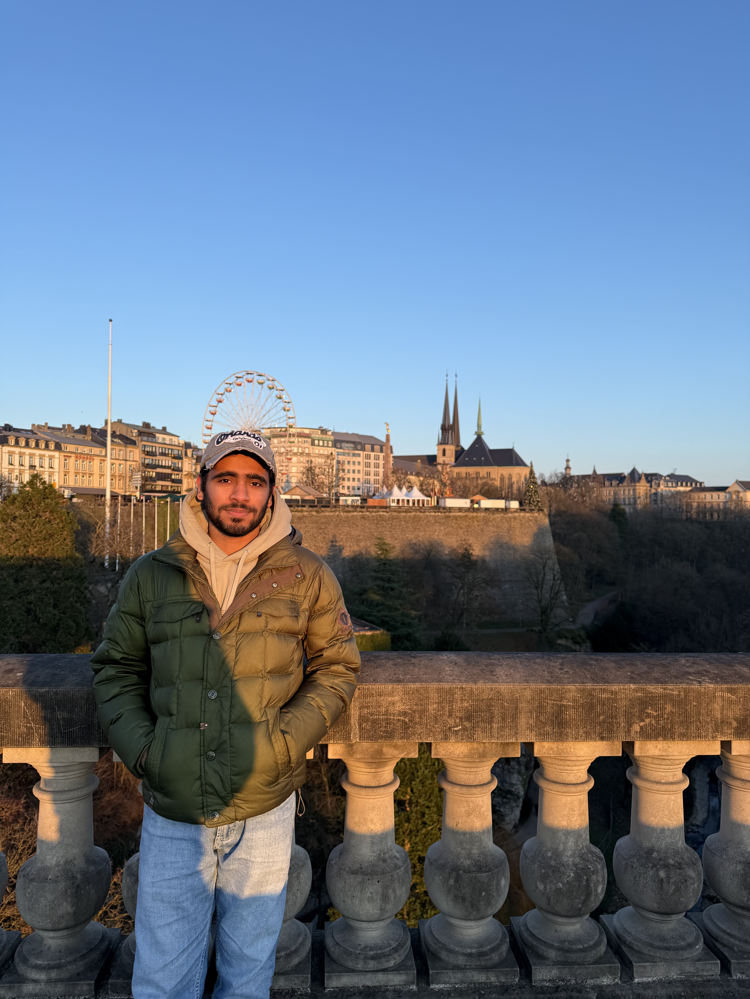

Data Science & AI/ML Engineer
Building intelligent systems with clean data pipelines and production-ready ML.
Yes, Bielefeld does exist..!! And I've been living and studying here since 2023.
I'm a 4th semester M.Sc. Data Science student at Universität Bielefeld. Before moving to Germany, I completed an AI/ML internship at YBI Foundation in Mumbai — building GCP BigQuery ETL pipelines, automating SQL workflows, and delivering dashboards to stakeholders. I'm passionate about the full data stack, from raw ingestion to deployed ML models, and I'm actively looking for Werkstudent and internship roles across Germany.
Read More →
Click any certificate to view all certifications